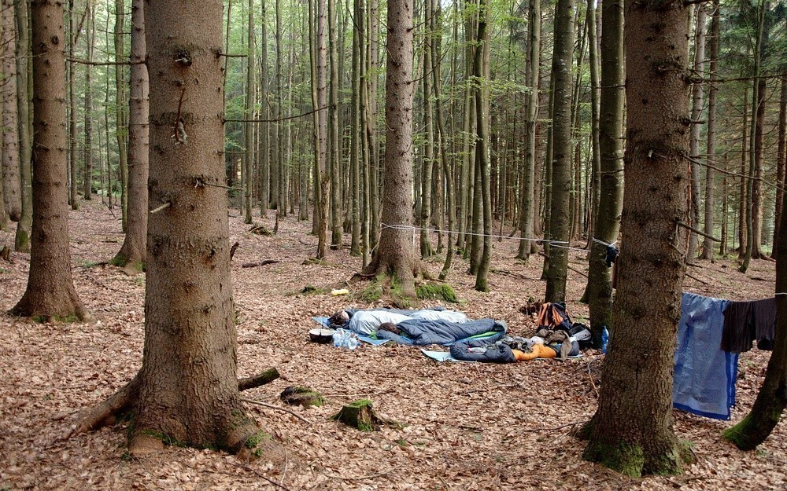

Fotky u článku o bezdomovcích na idnes.cz mi připomněly fotky z našeho letního čundru po Šumavě.
První den to opravdu vypadalo všelijak. Musím ale poznamenat, že po odchodu po nás nezůstalo ani smítko - příští rok budu muset fotit i stav po sbalení, abych měl čím to dokázat.

Druhý den už to vypadalo vzorněji. Ale možná to je jenom tím, že toho na fotce není tolik vidět… (© Vašek)

Fotku ze třetího dne nemám, protože večer jsme zalehli pozdě, v noci začalo pršet, my nebyli úplně připravení a ráno jsme měli dost svých starostí.
Čtvrtý den jsme raději už nic nepodcenili a raději si nachystali základní konstrukci pro spaní.
Pátý den to vypadalo ještě hůře, tak jsme se raději pod plachty schovali. Ale nepršelo.

Šestý den byla dokonce v okolí bouřka, na nás ale ani tak nic nekáplo. Možná to bylo větvemi smrků nad námi.

Sedmý den už se konečně plachty vyplatily, i když jenom tak kapalo.
Poslední přespání sedmý den na zahradě u Vaňkátů, ale to už jsem spal v teple domova… (© Vašek)

To že naše nouzové nocležiště vypadají všelijak je dáno i tím, že jsme měli zajímavý styl pochodu - přes poledne odpočívat, večer jít klidně až do půlnoci a ráno vstávat o něco déle. Takže na to, že všechno bylo stavěno za tmy, to není ještě tak strašné…